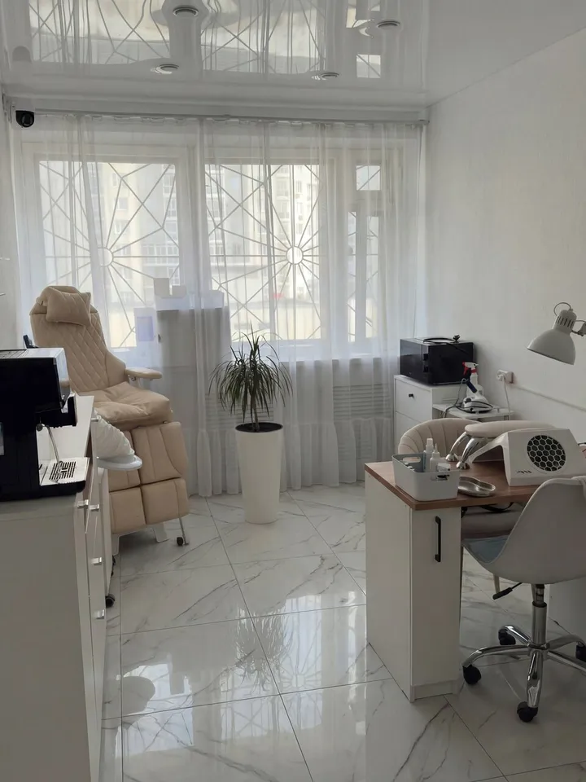
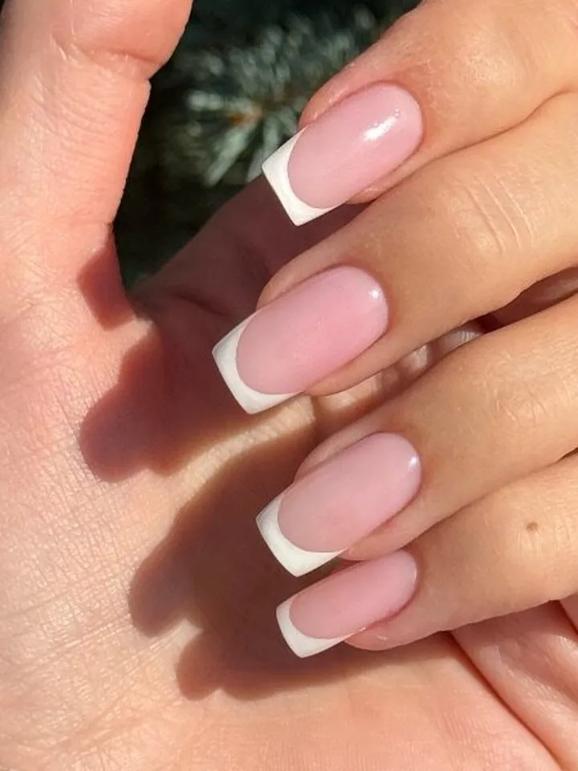
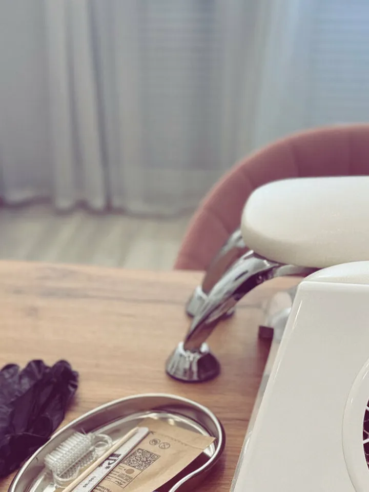
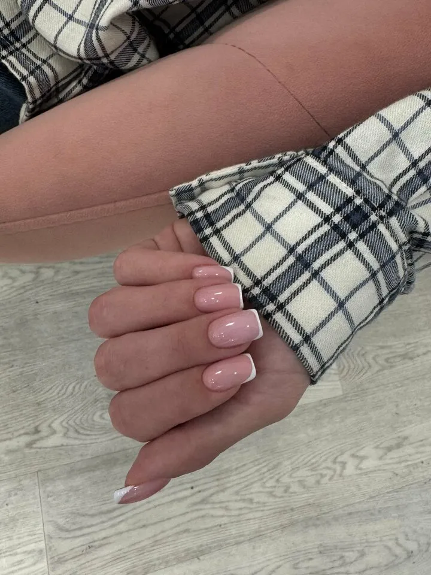

Маникюрна Бардина · ногтевая студия в Екатеринбурге

Екатеринбург, ул. Академика Бардина, 28 · 2 этаж
Маникюр и педикюр · ежедневно 09:00–21:00 по записи
О студии
«Маникюр на Бардина» – студия ногтевого сервиса с постоянной командой мастеров на улице Академика Бардина, в Юго-Западном.
У нас спокойно и уютно, а к обработке инструмента мы относимся внимательно. Пока идёт процедура, можно выпить кофе или чай со сладостями и просто поговорить. Мы стараемся найти удобное время, даже если вы решили записаться в последний момент.
- Постоянная команда мастеров
- Кофе, чай и сладости во время визита
- Парковка у здания
- Онлайн-запись в YClients



Услуги
Маникюр
Классический, комбинированный и японский маникюр, покрытие гель-лаком, укрепление и коррекция нарощенных ногтей, френч.
Педикюр
Уход за пальчиками и стопой, аппаратный педикюр с обработкой стопы, с покрытием или в натуральном виде.
Для мужчин
Мужской маникюр – аккуратно и без лишней суеты.
Актуальные цены и свободное время – в онлайн-записи.
Записаться онлайн
Отзывы
Очень уютная студия с приятной атмосферой и внимательными мастерами! Маникюр сделали аккуратно, красиво и качественно…
Яндекс Карты, 05.10.2026 Каждый раз ухожу из студии с настроением «ну это огонь»! Маникюр получается именно таким, как я хочу…
Яндекс Карты, 27.09.2026 В данную студию хожу уже пять лет, маникюр и педикюр на высшем уровне. Всегда четко по времени…
Яндекс Карты, 26.09.2026
Отзывы гостей с карточки студии на Яндекс Картах, многоточие означает сокращение.
Как нас найти
- Адрес
- Екатеринбург, ул. Академика Бардина, 28, «Дом науки и техники», 2 этаж, офис 224
Юго-Западный микрорайон, Ленинский район - Часы работы
- Ежедневно 09:00–21:00, по предварительной записи
- Телефон
- +7 922 321-82-30
- Онлайн-запись
- n481316.yclients.ru
Екатеринбург, ул. Академика Бардина, 28